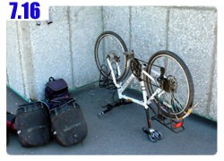

湖畔的旅館價錢還真便宜，入睡前思考了要不要在這裡多住一晚上的事。
離開哈薩克之前我有兩天的休息日，有點想將其中一天停留在這裡。
與其待在國境等著通關，不如悠閒的賞一下湖景，餐廳的東西也是超級好吃，大家也都很親切。
想著想著就真的只是想想而已，沒有付諸行動。
如果可以的話，我希望能找到有網路的地方，同時必須要有腳踏車店能維修一下小多的輪胎。
要滿足這兩個條件，看來只有大城市才有辦法，只好跟這個種滿青蘋果樹的旅館說掰掰了。
為了怕像昨天一樣餓肚子、一路上都是荒涼沒補給的情形，所以在吃完豐盛的早餐之後，同時在這裡買了很多口糧。
包含可以止渴的汽水和果汁，可以快速補充熱量的焦糖花生巧克力，水壺也一併裝滿水。
現在只剩下兩個水壺可以用，儲水量變成700CC乘以二，也就是不到一點五公升而已，相當的微薄。
買大瓶的寶特瓶飲料當補給，每次都想說喝完的空瓶子還可以水壺，結果看到新的飲料又忍不住買了下去。
整備完畢牽著車才要離開旅館，就覺得小多牽起來很不順暢，有點異樣的摩擦感，明明是牽在平地上卻會上下起伏的震動著。
一開始以為是泥巴沒清乾淨又摩到輪胎，仔細瞧了老半天也沒發現哪邊有問題，可是牽起來就是很不對勁。
一牽到大馬路上，才騎了一百公尺就覺得這下糗大了。
本來平穩的小多，現在騎起來有點搖晃，而且明明是平路，可是一直像是騎在凹凸不平的路面上一樣的抖動。
只知道問題出在輪胎，但細節和維修的方式則一無所知。
雖然騎起來很糟，但勉強硬要騎還是可以，只是這樣的情況大概騎不到十公里，小多就可以拿去報廢回收了。
牽著小多到公車等候站的後面，在哪裡比較不引人注目，卸下包包然後將小多反轉過來架好。
用手一轉動後輪，整個就是歪七扭八的旋轉著，忽左忽右的，一點也沒有在同一條直線上。
而且有十幾公分的輪框嚴重偏移，在轉動的時候會摩擦到車架，這就是異樣摩擦感的問題所在。
而震動的問題就是因為輪胎轉起來不平整，左偏右擺的，說不定輪框已經變形，騎起來當然就不穩。
後輪鋼絲斷四根的症狀開始浮現了，得想辦法應急處理一下，撐到大城市才有自行車店能進行修補。
RST的店長Dino前兩天打了越洋電話來，說明鋼絲斷掉的處理方式，調整輪胎的鋼絲是一門學問，就算是開自行車店的人也不見得有這個本事。
更何況是我這種只會換內胎兼打氣的初學者，但是現在也沒有別人能幫忙，就算台灣要寄新的輪胎來補給，也是遠水救近火。
下一個補給站是莫斯科，距離目前位置還有兩千公里左右，以小多現在的情況是不可能騎到莫斯科才更換的。
靠著Dino的指示，先將斷掉的鋼絲給卸下來，因為斷掉的鋼絲已經沒有任何的支撐力，留著還怕會勾到別的東西。
卸下鋼絲之後，輪胎看起來有點令人擔憂，尤其是氣嘴的部分，那邊連續斷了兩根鋼絲，整個很空洞，非常的令人不安。
接著轉動輪胎，觀察歪扭的部分，然後調整該處的鋼絲鬆緊度，一開始先實驗性質的調整幾根看對應的效果如何？
大概知道鋼絲和輪框的對應關係之後就開始大膽的調整起來，忙了好一陣子，終於輪胎轉動的時候不會摩擦到車架了。
但我也只能調整到這個地步，要讓輪胎像之前那樣平整的轉動憑我的功力是沒辦法了。
調整完之後小多騎起來就沒有摩擦的感覺，可是不穩的震動起伏依然存在，輪胎每轉一圈，整輛車就會抖動一次。
騎的越快抖動的越明顯，這時候已經不是騎乘舒不舒適的問題，而是還有沒有辦法騎的下去。
小多鋼絲斷掉不是一天兩天的事情，之前也經過很多的大城市，可是我都沒有很認真的找車店。
心裡面都想說反正鋼絲斷掉四根還有二十八根呀，而且車子也還能騎，幹嘛急著修車，又不是壞得很嚴重。
所以就一天拖過一天，直到問題浮現的時候才開始後悔當初怎麼不早一點去修車。
我跟小多說，有個男人夢想成為海賊王，他有一艘很棒的船叫做黃金梅利號。
這艘船陪著大家冒險去過好多地方，可是之後它壞得很嚴重，已經沒辦法再航行，結果就被船長一把鼻涕一把眼淚的放火給燒掉。
我講這個故事給小多聽不是要嚇唬他，而是堅定的跟小多講，不論你壞的多麼嚴重，我都會想辦法把你修好。
所以你要加油，再撐一下，還有一百公里就到大城市了，到那邊就會有車店能幫忙處理。
小多會突然發作，應該跟前幾天騎的路實在爛到不行有絕對的關係，一路上慢慢的騎車，幸好這段路的情況很不錯。
距離一百公里的科斯塔奈，在調整完鋼絲之後才開始騎車，那時已經將近中午，騎到城市時則是晚上七點。
一路上都不能輕鬆愉快的騎車，好像在騎小多走鋼索似的，一不小心就會墜落萬丈深淵。
今天也是很平淡的一天，或是我沒太多心思去注意有什麼有趣的事情。
路上經過商店和餐廳也沒停下來光顧，看到招牌不是自行車店就覺得沒有停下來的必要，除了早餐之外就沒吃別的東西。
經過一個很小的鎮，這邊相當的有趣，沿著馬路蓋的村莊，路旁插滿了注意行人過馬路的告示牌。
從進村子開始一路設立，直到離開村子為止，總計有三十四個這樣的告示牌沿路樹立著，這邊可以當成交通安全示範村莊。
但是與其設立那麼多的當心行人，不如也設立一些注意鵝過馬路的牌子吧。
一百公里的路，說遠不遠、說近不近，看著手錶的時間和碼表的里程同時增加，希望早一點到，又怕騎太快會誤事，反而到不了。
當馬路變寬、路燈每三十公尺就出現一根的時候，就表示快要進入城市了，哈薩克都是大城市才有像樣的建設，郊區什麼屁都沒有。
進城之前有一條很長的橋，橋下是美麗的河流展開成蜿蜒的河床，很多人在底下戲水，看起來就很涼爽的樣子。

進入城市第一件事情，不再像以往那樣拼命的找網路的招牌，現在不是輕鬆上網的時候。
要找自行車店有點難度，第一我不知道它的招牌長什麼樣子，第二我根本不知道這邊有沒有自行車店，我只是『希望』這裡會有。
要問人哪裡有自行車店，最快的方式就是讓你問到一個開自行車店的老闆。
如果運氣沒有那麼好，那第二快的方式就是問騎自行車的人。
一進入市區，眼光就搜尋著騎自行車人的影子，無奈這裡九成九九的人都是開車，騎在市區超級危險，沒有車子會讓你。
而且騎自行車的人好少好少，簡直要絕跡了，好不容易讓我發現一個穿紅衣服騎自行車的大叔。
趕緊跑過去問他哪邊有自行車店可以維修。
大叔人很好，不只是單純的跟我說哪邊要右轉或是直走就能看到，而是親自帶我騎過去。
但是他騎在逆向的車道，東鑽西繞的讓我跟得很慌張，同時還要記路，之後才有辦法找到車店的位置。
騎了一段路之後他停下來，說這邊就是自行車店了。
外頭放了四輛不怎麼樣的車，招牌也很不顯眼，再說，那些根本就是汽車的標誌吧。
探頭到店裡面，跟我所認識的自行車店差很多，裡面都賣小鬼的四輪玩具車，絲毫沒有專業車店的感覺。
裡面只剩下兩個女店員在顧店，我表明來意說要維修車輛，或是直接買新的輪胎來換。
她們揮揮手說了一大串的話，看著這間車店，我心裡翻譯她們說的話是：『這邊不作維修的生意，也沒有賣單車零件。』
好不容易找到車店，可是幫不上忙，心裡很失落，她們好像看出我的難過，可是講話我又聽不懂，就進去拿了紙筆。
在紙上寫了10~19，說這是營業時間，這段時間會有專人在店裡，維修或是換新零件應該是沒問題的，只是現在沒人在。
我看著她寫在紙上的時間，說這個時候來就會有人能幫忙嗎？
女店員肯定的點頭。
太好了，雖然我還是很懷疑這間不像車店的車店能幫什麼忙，但還是不要太早下定論，明天一早再來問問看。
找到車店之後，第二個目標就跟之前一樣，尋找網路的蹤影，這真是一件困難的工作，不是開玩笑的。
怎麼問人也沒人知道，有七成的人表明了不知道，有兩成會跟我說去電信局，剩下一成的人會想很久，然後很狐疑的比著一個方向，
我就傻傻的往那邊去找，結果依然是什麼都沒有。

這棟建築物看起來像是學校，外面放著校長的雕像，拿著一本書，表情生動的跟學生說要好好用功啊。
在看起來比較大條熱鬧的馬路上繞行著，這樣碰見網路的機會比較高，同時要將自行車店的位置刻在腦海裡，不可以走著走著就忘了。
繞了一個小時，總算給我發現這個高掛的大招牌，上面寫得真是清楚，一看就知道是我要找的網路。
一樣是先上網、後付錢，費用不明，計時方式也不明，員工說了算。
拿出電腦要嘗試接上店裡的網路，先被員工阻止說只能用店裡的電腦上網，不能接自己的電腦。
只要客氣的跟店員講，說我需要的是中文系統，這邊都是哈薩克語的windows，我不會使用，他們就會退讓。
但是這間網咖很奇怪，怎麼設定就是連不上網路，雖然還沒開始上網，但是已經開始計費囉。
問員工說能不能開啟店裡面電腦管理者的帳號，讓我看一下網路是怎麼設定的？
結果他們也不知道管理者的密碼。
那既然你們在網咖顧店，基本的網路常識應該有吧，問他們IP位址該怎麼設定，也沒人知道。
找來一個像是網管的傢伙，一問三不知，唯一的答案就是，請用店裡的電腦上網，其它一概不負責。
哈薩克語的windows，上網連中文字都顯示不了，沒有管理者的權限又不能安裝額外的字型、編碼和輸入法。
除了上傳遊記之外連想看個Email都沒辦法，全都是方塊字體，既然只能上傳遊記，那也好，不要在這裡花太多時間，省點錢去吃飯。
結果網路慢得離譜，感覺比撥接上網還要慢，一樣是花錢上網，在哈薩克真是很不方便。
在網咖待到九點多，上網兩個小時，又被收了七百元，真是超級貴的網路，物以稀為貴的鐵錚錚實例。
雖然很不方便，但一樣將網咖的位置記在腦海裡，科斯塔奈同時有網路和自行車店，所以在這裡多待一天休息是很不錯的。
離開網咖之後就要在天黑之前找到落腳的地方才行，城市越接近天黑氣氛越詭異。
路上行人打量我的眼光也許沒改變，但是我心理的感受則是越來越不安，好像入夜之後我還在城市裡遊走的話，會被壞人給扒皮吃掉一樣。
發個抖跟自己說不要嚇自己，趕緊找到旅館就沒事了，這邊旅館還真是不多，好不容易看到一間複合式經營的。
經營的東西很多，其中一樣是旅館，其他還有酒吧，進去裡面問價錢的時候，都是正在休息或是準備開工的女子，衣著火辣。
看著店裡的照片，猜想這間複合式經營，其它部分應該是脫衣舞或是色情行業吧。
有點想離開去找別的旅館，但天色已經開始變黑，還是先看看房間怎麼樣並問過價錢再作決定好了。
老闆娘，或是稱之為媽媽桑比較適合的人帶著我去看房間，每一間都是超級大間，有著曖昧的圓形大床，這邊應該是小姐做生意用的吧~_~
我揮揮手說房間這麼大，一定很貴，有沒有小間一點的，第二間房還是很高級，我再度揮手，看到最後一間，媽媽桑說最便宜就是這一間了。
裡面總算沒有奇怪的豪華大床，取而代之的是沙發床，房間依然很寬敞，還有一間獨立的衛浴。
最小的房間也這麼大，價錢呢？我說要住兩個晚上，能不能算便宜一點。
媽媽桑用手指伸直了四根，天真的我以為(或是期盼)這個四代表著四百塊。
結果當然是癡人說夢，四就是四千元，
好貴呀，瞬間金錢觀又開始錯亂，為什麼進入城市住宿會這麼燒錢？
我又懷著一點期待，問四千塊是住兩個晚上的價錢嗎？這樣平均起來一晚上兩千元，還算過得去。
結果當然是傻子談笑，兩晚上就是八千元。
苦笑著拿出一張五千元，我說這個價錢我只能住一個晚上，別以為媽媽桑會可憐我算我便宜，我在哈薩克殺價從來沒有成功過。
找回一張一千元，同樣是紙鈔，感覺交出去的五千元好厚，找回來的一千元好薄好薄。
進房間後第一件事情先把電話線給拔掉，以免晚上接到奇怪的電話問我需不需要叫小姐，然後才洗了舒服的澡。
本來想在這裡多住一天好好休息，可是怎麼有網路和自行車店的地方住宿都好貴，便宜的旅館又都是郊區。
明天睡醒先去自行車店問維修的事情，看情況怎麼樣，如果一天不能處理好的話，再找找有沒有便宜一點的旅館多住一天。
如果白天就能將小多維修完畢，那就不要待在大城市，接著往國境騎吧，要是小多能恢復元氣，住在鳥不生蛋的郊區休息一天又何妨。
小多，無論如何，我絕對不會一把火將你燒掉，我們要一起騎到巴黎去。
繼續閱讀：7.17 恩人來了
哈薩克-堅戈－ 1：0.26 台幣
7.16
總計：5495元
早餐奶茶、煎蛋、火腿、麵包125元、可樂200元、蘋果汁120元、巧克力350元、網路兩小時700元、超貴異色旅館4000元